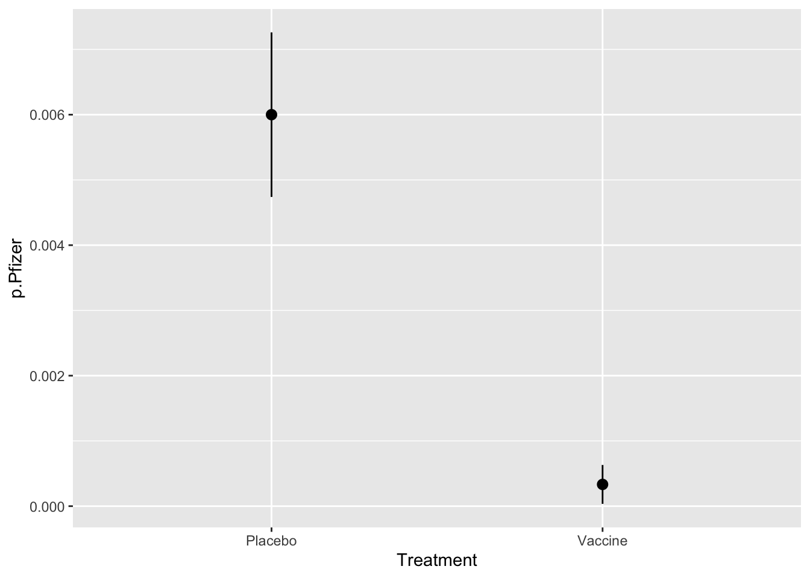
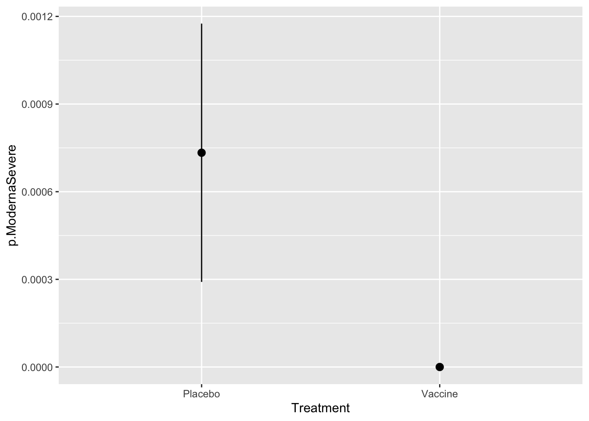

| Treatment | Pfizer | ModernaAll | ModernaSevere | N |
|---|---|---|---|---|
| Placebo | 90 | 95 | 11 | 15000 |
| Vaccine | 5 | 5 | 0 | 15000 |
Covid-19 Vaccines
Good News! In November, both Pfizer and Moderna announce Phase 3 Vaccine Trials with promising results.
With over 30,000 participants in each study they reported the following data.
Measures of Effectiveness
We start with a cross-tab
| Treatment | Sick | Healthy | Total |
|---|---|---|---|
| Placebo | SP | HP | NP |
| Vaccine | SV | HV | NV |
| Total | NS | NH | N |
Odds of getting sick
Placebo: $ SP/HP $ Vaccine: $ SV/HV $
Cross Product (Odds) Ratio
\[ OR = \frac{SP/HP}{SV/HV} \] How much does your odds of getting sick increase if you get the placebo instead of the vaccine.
Risk Ratio
\[ RR = \frac{SP/NP}{SV/NV} \] How much does your probiliby of getting sick increase if you get the placebo instead of the vaccine.
Vaccine Effectiveness
\[ VE = 100 (1 - \frac{1}{RR}) \]
Chi-square test
Null hypothesis is that getting the disease is independent of the vaccine. In other words, \(OR=RR=1\).
\[ SV/NV = SP/NP \]
Large chi-squared value incidates that cross product rate is not 1 (but doesn’t tell if placebo or vaccine is better!
Z-score test
Another way to work with these data is to calculate probabilities of infection for each group and the standard errors. Then can use the \(z\)-test to compare.
\[p_V = p(S|V) = SV/NV \qquad SE(p_V) = \sqrt{p_V(1-p_V)/NV} \] \[p_P = p(S|P) = SP/NP \qquad SE(p_P) = \sqrt{p_P(1-p_P)/NP} \] \[ z = \frac{p_P-p_V}{\sqrt{SE(p_V)^2 + SE(p_P)^2}}\]
Pfizer Vaccine
There were around 30,000 volunteers in the Phase 3 trials; 15,000 in each arm.
| Treatment | Pfizer | p.Pfizer | s.Pfizer |
|---|---|---|---|
| Placebo | 90 | 6e-03 | 0.00063 |
| Vaccine | 5 | 3e-04 | 0.00015 |

X^2 – Pfizer
In SPSS this is done by producing a cross-tab. We don’t have the number of negative cases in each arm of the study, but up to rounding error it is just the sample size, so we will use that.

Pearson's Chi-squared test with Yates' continuity correction
data: as.matrix(select(covidVaccines, Pfizer, N))
X-squared = 74.034, df = 1, p-value < 2.2e-16Z = 8.75 p = 0 Risk Ratio: 18 Vaccine Effectiveness: 94.4 Moderna Vaccine – All Cases
There were around 30,000 volunteers in the Phase 3 trials; 15,000 in each arm.
| Treatment | ModernaAll | p.ModernaAll | s.ModernaAll |
|---|---|---|---|
| Placebo | 95 | 0.0063 | 0.00065 |
| Vaccine | 5 | 0.0003 | 0.00015 |
X^2 – Moderna (All Cases)
In SPSS this is done by producing a cross-tab. We don’t have the number of negative cases in each arm of the study, but up to rounding error it is just the sample size, so we will use that.
Pearson's Chi-squared test with Yates' continuity correction
data: as.matrix(select(covidVaccines, ModernaAll, N))
X-squared = 78.942, df = 1, p-value < 2.2e-16Z = 9.03 p = 0 Risk Ratio: 19 Vaccine Effectiveness: 94.7 Moderna Vaccine – Severe Cases
| Treatment | ModernaSevere | p.ModernaSevere | s.ModernaSevere |
|---|---|---|---|
| Placebo | 11 | 7e-04 | 0.00022 |
| Vaccine | 0 | 0e+00 | 0.00000 |

X^2 – Moderna (All Cases)
In SPSS this is done by producing a cross-tab. We don’t have the number of negative cases in each arm of the study, but up to rounding error it is just the sample size, so we will use that.

Pearson's Chi-squared test with Yates' continuity correction
data: as.matrix(select(covidVaccines, ModernaSevere, N))
X-squared = 9.0869, df = 1, p-value = 0.002574Z = 3.32 p = 0 Risk Ratio: Inf Vaccine Effectiveness: 100 Yikes! The estimate for the chances of getting Severe Covid-19 with the virus is 0. Divide by zero error!
But probability zero means impossible. That is not right!
Continuity Correction
Fix this by adding a conditinuity correction. We add 1/2 to all of the entries in the table.
In particular, this makes the estimated rate for getting severe COVID-19 \(\frac{1}{2}/(N+1)\).
| Treatment | ModernaSevere | p.ModernaSevere | s.ModernaSevere |
|---|---|---|---|
| Placebo | 11 | 0.00077 | 0.00023 |
| Vaccine | 0 | 0.00003 | 0.00005 |
Risk Ratio: 23 Vaccine Effectiveness: 95.7 References:
StatNews article on Pfizer vaccine: https://www.statnews.com/2020/11/09/covid-19-vaccine-from-pfizer-and-biontech-is-strongly-effective-early-data-from-large-trial-indicate/
Official Protocol document from Pfizer: https://www.pfizer.com/science/coronavirus
Pfizer Press Release: https://www.pfizer.com/news/press-release/press-release-detail/pfizer-and-biontech-announce-vaccine-candidate-against
Moderna Press Release: https://investors.modernatx.com/news-releases/news-release-details/modernas-covid-19-vaccine-candidate-meets-its-primary-efficacy
Entries from Andrew Gelman’s Blog: https://statmodeling.stat.columbia.edu/2020/11/16/estimating-efficacy-of-the-vaccine-from-95-true-infections/
https://statmodeling.stat.columbia.edu/2020/11/11/the-pfizer-biontech-vaccine-may-be-a-lot-more-effective-than-you-think/
- How to use SPSS to obtain Odd Ratio and Relative Risk http://brahms.emu.edu.tr/icetin/spss8-RR-OR.pdf